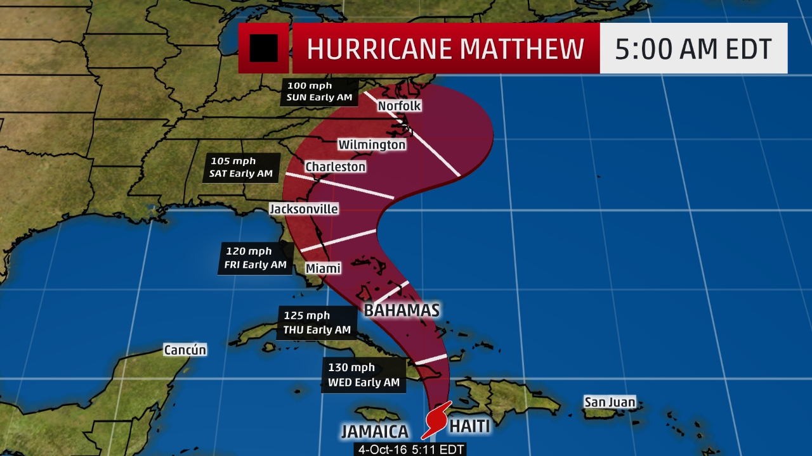

Americorps NCCC
Between High School and College I took a gap year to serve in Americorps National Civilian Community Corps (NCCC). Americorps NCCC is a full-time, team-based national service program for 18-26 year-olds run through the federal Corporation for National and Community service. I was assigned to the pacific region based out of Sacramento, but worked on projects across the country. I completed over 1750 hours of community service and was awarded the bronze medal of service in 2017 by the 115th United States Congress.
I ended up working on six SPIKEs (jargon meaning projects) and many smaller ISPs across five states during my service as a corps member (CA, OR, UT, NC, and SC). my specialty role on the team was life after americorps. I reviewed my coworkers' applications for jobs and schools, and advised them on career planning. Below are some of the my project highlights:
 According to American Red Cross’ assessments 9,310 people were effected by Hurricane Matthew in the state of North Carolina alone, ranging from homes being completely destroyed to minor flood damage. Over the course of My team's deployment to the emergency, we directly interacted with over 600 disaster victims through donation centers and public events.
We worked on three areas of focus. The first was working at donated goods distribution centers in Lumberton and Kinston, where we sorted and distributed clothing, food and water, and hygiene products to effected community members. The centers distributed nearly 6,000 pounds of clothing and 3,500 pounds of food and water to people that needed it most. We then cleaned up and shut down the centers after our successful initiative. In Goldsboro NC, I served in Disaster Assessment and Logistics. On the the Disaster Assessment team I was a lead point of contact for damage assessment crews who performed damage assessments on homes in effected areas. I created routes for these crews and our team edited nearly 1,000 geo-tags for the assessors throughout North and South Carolina. The Logistics team resupplied 45 shelter trailers with cots and blankets for re-deployment and palletized over 1,000 cots for donation to local organizations such as the Boy Scouts.
We had two trail work focused projects. The first was around San Bernardino National Forest, picutered above, where I worked on trail building and maintence, including constructing over 80 feet of stone errosion walls and an ADA ramp. My second trail related project was on Marin county public land for the Walker Creek School, where we built a brand new 2 mile long trail including a bridge for emergency vehicles to acsess the trail network.
 We worked with the Santa Clara County Parks and Recreation Department on supporting several of their projects at four parks.
We worked with the Santa Clara County Parks and Recreation Department on supporting several of their projects at four parks.
At Coyote Lake on the Southern most end of the county, we worked on enhancing park accessibility. we removed four Handicap parking signs and constructed six new signs in more accessible areas at three different entrances to the park. The team also painted six curbs at the newly placed parking spaces a bright Handicap blue and built two ADA accessible pathways.
At Joseph D. Grant County Park, the site of a century old ranch that now serves as a camping and recreational hiking park, we removed eighty feet of dilapidated fence and built a brand new one to serve as picnicking area for weddings and other
ceremonies at the site’s historic rose garden.
At Martial Cottle Park, one of the last remaining ranches to exist within the San Jose
city limits that is preserved for agricultural and educational purposes, we primarily focused on removing and
replacing a historic corral fence that is planned to once again retain grazing cattle. The pasture gate that I constructed for the park is shown in the picture.